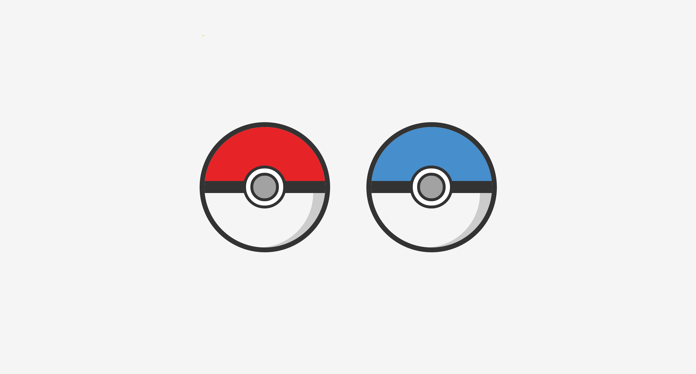
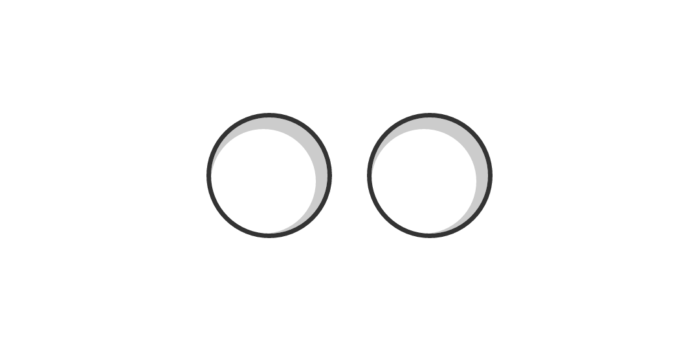
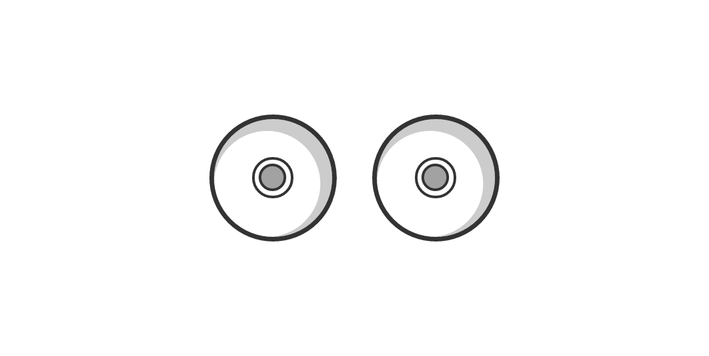
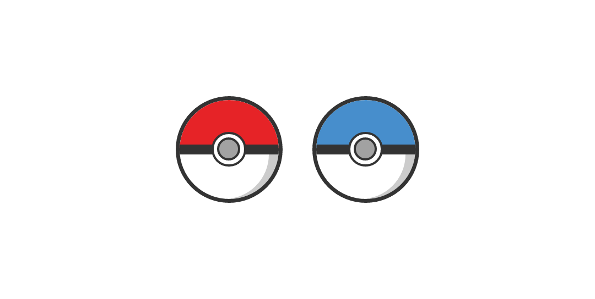
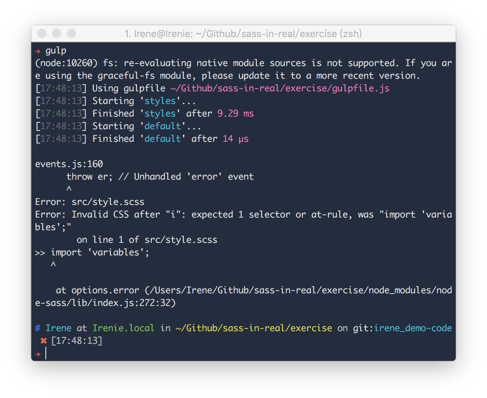
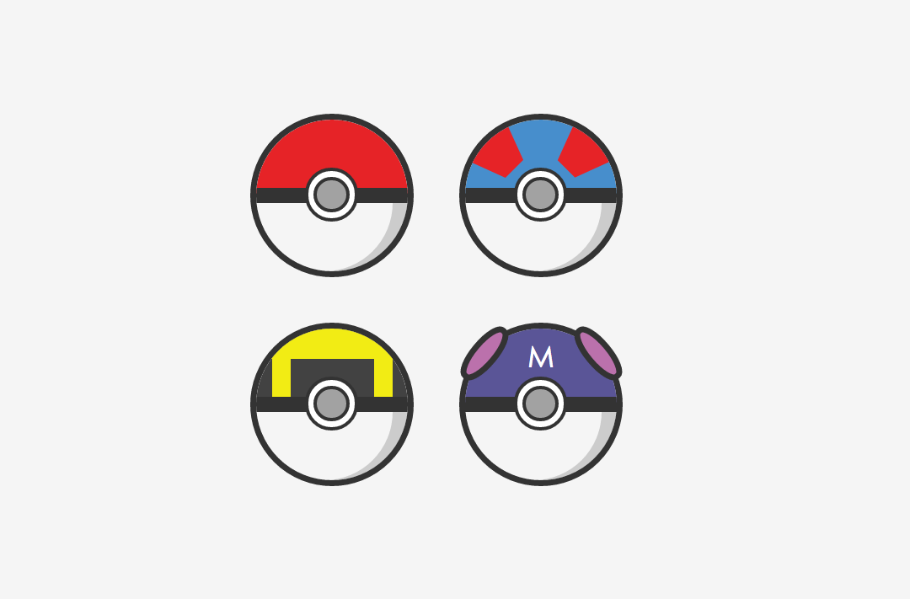

用 Sass 來抓寶吧！

上圖即是用 Scss 繪製而成的神奇寶貝球，動手試試看吧：
Step 1: 建立專案目錄
為專案建立一個新資料夾，並開啟終端機移動到該目錄之下，輸入 npm init 來初始化專案。
接著輸入以下指令來安裝 Gulp：
npm install gulp -save-devnpm install gulp-sass --save-devGulp 安裝完成後，在根目錄新增 gulpfile.js來編譯 Scss：
var gulp = require('gulp'),
gulpSass = require('gulp-sass');
gulp.task('styles', function () {
gulp.src('./src/*.scss')
.pipe(gulpSass())
.pipe(gulp.dest('./css/'));
});
gulp.task('default',['styles']);接著繼續在根目錄新增 index.html 與 src/style.scss。
完成後的目錄結構：
.
├── gulpfile.js
├── index.html
├── node_modules
├── package.json
└── src
└── style.scssStep 2: 在頁面上展示你的神奇寶貝球
編輯 index.html 來調整神奇寶貝球在頁面上的位置：
<!DOCTYPE html>
<html lang="en">
<head>
<title></title>
<meta charset="UTF-8">
<meta name="viewport" content="width=device-width, initial-scale=1">
<link href="css/style.css" rel="stylesheet">
</head>
<body>
<div class="container">
<div class="pokeball red"><div class="pokeball-btn"></div></div>
<div class="pokeball blue"><div class="pokeball-btn"></div></div>
</div>
</body>
</html>記得根據 gulpfile.js 的設定來引入編譯後的 CSS 檔案：
<link href="css/style.css" rel="stylesheet">Step 3: 定義變數與函示
專案通常會將定義變數與函式的檔案獨立出來，再用 @import 的方式進行管理。
分別新增 _variables.scss 與 _mixin.scss 至 src 目錄底下：
// Variables
$color-red: #e62327;
$color-blue: #478ecc;
$color-gray: #333;- 顏色或間距常會被定義成變數，能夠確保專案的統一性，以及避免繁複的撰寫。
// Mixins
@mixin border-radius($radius){
-webkit-border-radius: $radius;
-moz-border-radius: $radius;
border-radius: $radius;
}
@mixin size($width, $height) {
width: $width;
height: $height;
}
@mixin ball-wrapper($color) {
@include border-radius(100px 100px 0 0);
@include size(200px, 90px);
position: absolute;
background-color: $color;
border-bottom: 20px solid $color-gray;
}- 函示常用來解決 prefix 的問題如
@mixin border-radius($radius)。 @mixin size($width, $height)用來避免反覆撰寫元素的大小。@mixin ball-wrapper($color)用來繪製不同寶貝球的上蓋顏色。
最後記得在 style.scss 開頭引入這兩支檔案：
@import 'variables';
@import 'mixin';Step 4: 製作你專屬的神奇寶貝球
繼續編輯你的 style.scss 來完成你的神奇寶貝球吧：
A. 繪出寶貝球的輪廓

.pokeball {
@include border-radius(50%);
@include size(200px, 200px);
float: left;
overflow: hidden;
position: relative;
margin: 30px;
border: 8px solid $color-gray;
box-shadow: inset -10px 10px 0 10px #ccc;
}使用 @include 來使用我們已經定義好的函式，函式能根據傳入的參數不同而有不同結果。接著加上邊框與陰影。
B. 加上中間的按鈕

.pokeball {
@include border-radius(50%);
@include size(200px, 200px);
float: left;
overflow: hidden;
position: relative;
margin: 30px;
border: 8px solid $color-gray;
box-shadow: inset -10px 10px 0 10px #ccc;
.pokeball-btn{
@include border-radius(50%);
@include size(62px, 62px);
position: absolute;
border: 5px solid $color-gray;
background-color: white;
margin: 64px;
&::after {
@include border-radius(50%);
@include size(38px, 38px);
content:"";
position: absolute;
border: 5px solid $color-gray;
background-color: $color-gray + 111;
margin: 7px;
}
}
}這邊使用 ::after 擬元素來畫出中間的灰色圓形，擬元素（ pseudo-elements ）是一種特別的 CSS Selector，用來指向指定元素的最前或最後，這樣就能避免在 HTML 裡寫入太多元素。
注意到 ::after 前方的 & 符號了嗎？& 指向母元素，會將接在後方的 Selector 拉到與母元素同一個層級。例如：
.pokeball-btn {
&::after {
...
}
}在 CSS 中等同於：
.pokeball-btn::after {
...
}C. 你掉的是紅球還是藍球呢？

.pokeball {
@include border-radius(50%);
@include size(200px, 200px);
float: left;
overflow: hidden;
position: relative;
margin: 30px;
border: 8px solid $color-gray;
box-shadow: inset -10px 10px 0 10px #ccc;
.pokeball-btn{
@include border-radius(50%);
@include size(62px, 62px);
position: absolute;
border: 5px solid $color-gray;
background-color: white;
margin: 64px;
&::after {
@include border-radius(50%);
@include size(38px, 38px);
border: 5px solid $color-gray;
background-color: $color-gray + 111;
margin: 7px;
}
}
&.red {
&::before{
@include ball-wrapper($color-red)
content:"";
position: absolute;
}
}
&.blue {
&::before{
@include ball-wrapper($color-blue)
content:"";
position: absolute;
}
}
}還記得在 HTML 中，我們如何定義紅色與藍色的寶貝球嗎？我們將顏色與 .pokeball 放在一起。
<div class="pokeball red"></div>
<div class="pokeball blue"></div>因此再次使用 & 符號，便能將 .red 與 .blue 拉到與 .pokeball 同一層級。這樣不僅能夠分別定義不同的顏色，也能保有Sass 特有的巢狀結構。
Step 5: 我要成為神奇寶貝大師！
只差最後一步，就能帶著你的寶貝球踏上神奇寶貝大師之旅了！
打開終端機，在專案根目錄下輸入 gulp，Gulp 就會將 ./src/style.scss 編譯成 ./css/style.css，編譯完成後，就能在瀏覽器看到成果囉！

當你的程式碼有誤導至編譯不成功時，Gulp 會在終端機指出問題出處來幫助你除錯。
精益求精
試著改變範例的程式碼，看看能不能作出更多自己想要的效果。你也可以挑戰更高的目標，試試做出各種不同的神奇寶貝球：

唯有不斷練習才能更加熟練，很快你就會說：「我再也回不去了！」
本範例完整程式碼：(待捕)